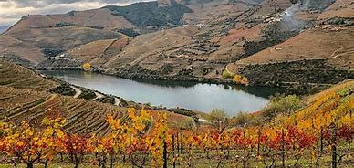
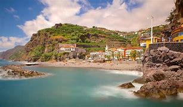
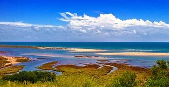

Vale do Douro
História
A Primeira região do mundo a ser demarcada para produção de vinho foi o Vale do Rio Douro em Portugal
que é hoje Patrimônio Mundial. Sua paisagem é invulgar e fantástica, bem como sua história… O inglês
Joseph James Forrester desvendou minuciosamente a região. O Douro era a paixão que mais energia lhe
consumia. Para o estudar até ao mais ínfimo recanto mandou construir um barco rabelo de luxo, com
dormitório, restaurante e garrafeira, pagava altos salários para ter os marinheiros mais experientes
e obrigava-os a vestir farda. Nas margens do rio, ou nas aldeias miseráveis da região, tornou-se uma
lenda. Subiu e desceu montes e vales.
Reservas Ecologicas
O Vale do Douro, em Portugal, é uma região que abriga áreas de proteção ambiental e reservas
ecológicas, apesar de ser mais conhecido por sua produção de vinho do Porto. O Vale do Douro é um
dos locais mais antigos de viticultura no mundo, e sua paisagem cultural foi classificada como
Patrimônio Mundial pela UNESCO em 2001. No entanto, além da importância cultural e econômica da
região, há também preocupação com a preservação do meio ambiente.
Existem várias áreas protegidas no Vale do Douro, entre elas:
- Parque Natural do Douro Internacional: Este parque está situado na fronteira
entre Portugal e
Espanha, ao longo do rio Douro. A área protege ecossistemas ricos em biodiversidade, incluindo
aves de rapina, como o abutre-do-Egito e a águia-real, além de fauna e flora típicas da região.
- Rede Natura 2000: O Vale do Douro faz parte da Rede Natura 2000, uma iniciativa
da União
Europeia para conservar habitats e espécies ameaçadas. Várias áreas ao longo do Douro estão
protegidas sob essa rede para garantir a preservação de habitats naturais, como os bosques
mediterrânicos e as zonas de estepe.
Importância Turística
- Patrimônio da Humanidade (UNESCO): A Paisagem Cultural do Alto Douro Vinhateiro
foi classificada
como Patrimônio Mundial pela UNESCO em 2001. Isso atrai muitos visitantes interessados em
explorar a paisagem deslumbrante e as tradições vitivinícolas que datam de mais de 2.000 anos.
- Enoturismo: O Douro é famoso por seus vinhos, especialmente o vinho do Porto.
Muitas quintas (vinícolas) oferecem degustações de vinhos, passeios pelos vinhedos, e explicam os processos de produção, atraindo amantes de vinho de todo o mundo.
- Paisagens Naturais e Culturais: O vale é famoso por suas encostas em socalcos,
criadas pelo homem ao longo de séculos para permitir o cultivo das videiras. A vista das encostas repletas de vinhedos é uma das paisagens mais icônicas de Portugal.
Importância Ambiental
- Paisagem Cultural e Sustentabilidade: Os vinhedos em socalcos do Douro são
um exemplo de agricultura sustentável, moldados ao longo de séculos. Essa interação harmoniosa entre o homem e a natureza contribui para a conservação do solo e das águas
- Conservação dos Recursos Hídricos: O rio Douro é essencial para a agricultura e a vida selvagem. A gestão cuidadosa dos recursos hídricos ajuda a preservar o ecossistema e garantir a qualide da água na região.
- Biodiversidade: O Vale do Douro é um refúgio para diversas espécies de plantas e animais, muitas delas únicas da região. A preservação de sua rica biodiversidade é fundamental para o equilíbrio ecológico.

Ilha da Madeira
História
A Ilha da Madeira, localizada no Atlântico, tem uma história rica que começa em 1419, quando os
navegadores portugueses João Gonçalves Zarco e Tristão Vaz Teixeira descobriram a ilha. Embora a
ilha estivesse desabitada, os navegadores portugueses rapidamente reconheceram seu potencial
estratégico e agrícola. A colonização oficial da Madeira começou em 1425, sob ordens do Infante D.
Reservas Ecologicas
A Ilha da Madeira é reconhecida por sua biodiversidade única e áreas protegidas. Aqui estão algumas
das principais Reservas Ecológicas da Madeira:
- Parque Natural da Madeira: Criado em 1982, cobre cerca de 2/3 da ilha e visa proteger a rica biodiversidade local, incluindo a Floresta Laurissilva, Patrimônio Mundial da UNESCO. Esta floresta subtropical é uma das mais bem preservadas do mundo e abriga várias espécies endêmicas.
- Reserva Natural das Ilhas Desertas: Este arquipélago de três pequenas ilhas, ao sul da Madeira, é uma área protegida dedicada à conservação da fauna, especialmente da foca-monge (uma das espécies mais ameaçadas do mundo) e várias aves marinhas.
Importância Turística
- Ecoturismo e Sustentabilidade: As reservas naturais da Madeira oferecem oportunidades para o
ecoturismo, com trilhas, observação de aves e passeios guiados.
- Paisagens Únicas: Áreas como a Floresta Laurissilva e a Ponta de São Lourenço apresentam cenários de tirar o fôlego, que encantam turistas.
- Observação de Vida Selvagem: Reservas como as Ilhas Desertas e as Ilhas Selvagens atraem turistas interessados na vida marinha, especialmente para observar a rara foca-monge e diversas aves marinhas./li>
Importância Ambiental
- onservação da Biodiversidade: As reservas protegem ecossistemas ricos em biodiversidade, incluindo várias espécies endêmicas de plantas e animais.
- Educação Ambiental e Pesquisa: Essas áreas proporcionam oportunidades para a pesquisa científica
e a educação ambiental.
- Mitigação das Mudanças Climáticas: A proteção de florestas e ecossistemas naturais é crucial para a mitigação das mudanças climáticas.

Ria Formosa
História
A Ria Formosa, localizada no Algarve, Portugal, tem uma rica história que remonta à antiguidade,
quando era utilizada por comunidades locais para alimentação e pesca. Durante o período romano, a
região destacou-se pela produção de sal e recursos marinhos. No século XVI, a produção de sal e a
pesca tornaram-se atividades econômicas vitais, contribuindo para o sustento das populações locais.
Com o passar dos anos e o crescimento do desenvolvimento urbano e turístico, a Ria Formosa começou a
ser ameaçada. Em resposta a essas pressões, foi criada a Reserva Natural da Ria Formosa em 1987, com
o objetivo de proteger seus ecossistemas e biodiversidade.
Reservas Ecologicas
A Ria Formosa é uma das mais importantes áreas naturais de Portugal, com várias reservas ecológicas
que visam proteger a biodiversidade e os ecossistemas únicos da região. Aqui estão algumas das
principais características e áreas de destaque:
- Reserva Natural da Ria Formosa: A reserva é lar de diversas espécies de aves migratórias, peixes, moluscos e crustáceos. É um habitat crucial para aves como a garça-real, o flamingo e o pilrito, além de ser uma área importante para a reprodução de várias espécies marinha.
- Ilhas Barreira: As ilhas que compõem a Ria Formosa, como a Ilha da Culatra, Ilha do Farol e Ilha da Tavira, são parte integrante do ecossistema e desempenham um papel importante na proteção contra erosão e tempestades.
- Sapais e Zonas Húmidas: Os sapais são áreas alagadas que desempenham um papel vital na filtragem de poluentes e na regulação dos níveis de água. Eles também são fundamentais para a manutenção da biodiversidade.
Importância Turística
- Ecoturismo e Natureza: A Ria Formosa oferece paisagens deslumbrantes, incluindo ilhas-barreira, lagunas e sapais, tornando-a um destino ideal para amantes da natureza.
- Cultura e Gastronomia: A Ria Formosa está ligada à cultura e tradições locais, especialmente na pesca e na produção de mariscos.
- Sustentabilidade: A Ria Formosa promove práticas de turismo sustentável que respeitam o meio ambiente, garantindo que as atividades turísticas não comprometam a integridade dos ecossistemas locais.
Importância Ambiental
- onservação da Biodiversidade: As reservas protegem ecossistemas ricos em biodiversidade, incluindo várias espécies endêmicas de plantas e animais.
- Educação Ambiental e Pesquisa: Essas áreas proporcionam oportunidades para a pesquisa científica e a educação ambiental. Programas de conservação e estudos sobre a biodiversidade podem ser realizados, sensibilizando visitantes e moradores sobre a importância da preservação.
- Mitigação das Mudanças Climáticas: A proteção de florestas e ecossistemas naturais é crucial para a mitigação das mudanças climáticas.